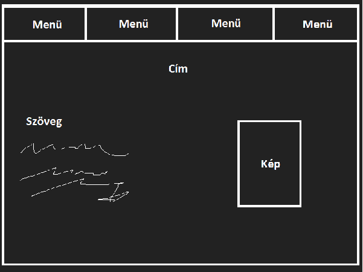

Tervezés menete:
Az alábbi képhez hasonlóan megrajzoltam nagyjából a elkészítendő oldalam vázlatát. Utánna néztem, hogy mogyan tudom megoldani ezeket majd elkezdtem kódolni.
Nehézségek:
A program és a kódolási nyelv megismerése okozta legnagyobb nehézségek, de szerencsére sikerült élkészíteni és szerintem elengendő lett az adott szint eléréséhez. A képek beillesztésénél és az elemek méretezésénél próbálgattam még pár dolgot, mert elsőre nem sikerült.